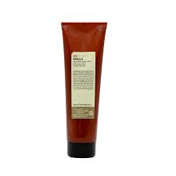
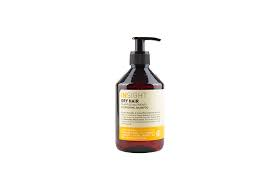
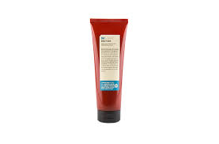
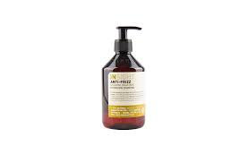
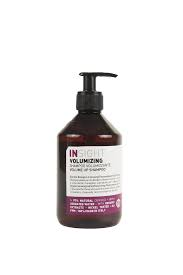
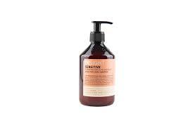

Crema modeladora para el styling del cabello ondulado y rizado, con efecto anti-encrespamiento. Define los mechones dejando el rizo suave y elástico, también en caso de clima húmedo. No pesa el cabello y no deja residuos.
Beneficios: Enriquecido con fito-aceites que preservan la hidratación del cabello durante el peinado, ayudnado a crear mechones definidos y ligeros, sin dejar residuos.
Rebuild

$47
Tiene una fórmula con un ph más básico que el del cabello, para facilitar la apertura de las escamas, rica en ingredientes capaces de penetrar en profundidad y reparar la corteza capilar desde el interior.
Beneficios: Rebuild es una nueva línea, rica en ingredientes de origen natural que ayudan a restaurar la integridad de la fibra capilar y su contenido prótéico, mejorando el brillo, la peinabilidad y la elasticidad.
Dry Hair

$55
Un champú para cabellos secos y frágiles, ejerce una acción nutritiva y reparadora desde la raíz hasta las puntas. Ofrece una reparación profunda de la fibra, para cabellos fuertes y nutridos..
Beneficios: El cabello se ve más suave, desde la raíz hasta las puntas. Restituye al cabello elasticidad y flexibilidad. Restablece el brillo del cabello, haciendo resaltar su esplendor.
Daily-use

$40
Champú adecuado para lavados frecuentes, gracias a su fórmula delicada. Devuelve la vitalidad al cabello dejándolo brillante y suave.
Beneficios: Protege el nivel natural de hidratación del cabello. Aumenta la fuerza de la fibra capilar y nutre el cabello hasta la raíz, aportando la mpaxima luminosidad y brillo.
Antioxidant
$49
Champú adecuado para todo tipo de cabello. Cumple una acción antioxidante contra los efectos nocivos de los radicales libres.
Beneficios: Protege la fibra capilar de las agresiones externas. El betacaroteno protege el cabello de los agentes atmosféricos contaminantes.
Damaged hair
$75
Champú de acción reparadora, gracias a su fórmula con activos nutritivos alisa la fibra capilar haciéndola más brillante.
Beneficios: Refuerza el bulbo capilar. Otorga brillo, elasticidad y volumen.
Anti-Frizz

$38
Un champú con la consistencia de una cera, práctico de dosificar y aplicar, que limpia suavemente los cabellos rizados y ondulados, naturales o con permanente. Su fórmula hidratante elimina eficazmente el sebo y las impurezas, dejando el cabello suave y ligero. Ideal para todo tipo de rizos, de la categoría 2 a la 4. Para los cabellos de la categoría 4, que suelen ser más porosos, puede ser necesaria una aplicación adicional.
Beneficios: Enriquecido con fito-aceites de acción nutritiva y acondicionadora, que facilitan el lavado y dejan el cabello suave e hidratado, listo para el siguiente paso.
Colored hair
$43
Champú específicamente estudiado para cabellos teñidos o con mechas, para proteger la fibra capilar de las agresiones externas
Beneficios: Nutre intensamente el cabello, protegiendo y prolongando la duración del color.
Volumizing

$38
Champú recomendado para cabellos finos, para otorgarles cuerpo y volumen.
Beneficios: El cabello queda más suave, con cuerpo y ligero desde la raíz hasta las puntas.
Sensitive

$60
Champú para cuero cabelludo sensible, con una fórmula altamente compatible, para resguardar tambien el cuero cabelludo más sensible..
Beneficios: Este champú sumamente delicado es adecuado para toda la familia, inclusio para los niños. Particularmente indicado para un uso frecuente, respeta el natural equilibrio hidrolipídico del cuero cabelludo
Lenitive
$49
Champú dermo-lenitivo, con una fórmula sumamente dermocompatible, para ayudar a calmar el cuero cabelludo irritado.
Beneficios: Acción hidratante intensiva, calmante y reequilibrante para el cuero cabelludo irritado. Deja el cabello suave y sedoso.